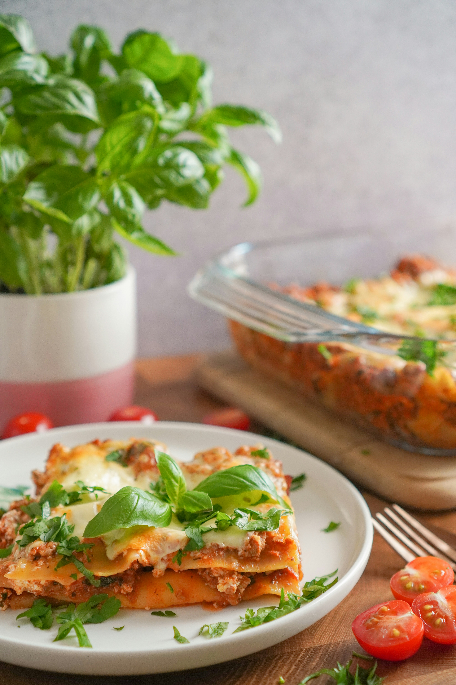

Lasagna
Home

The Lasagna
Lasagna is a classic Italian dish made of stacked layers of flat pasta alternating with fillings
such as ground meat and tomato sauce.
The core components
Pasta Sheets,
The Meat Ragu,
White Sauce,
Cheese
How to make Lasagna
- Cook the Sauce
• Brown the meat with onions, garlic, and seasonings.
• Simmer with tomatoes for 20 to 30 minutes.
- Prep the Noodles & Cheese
• Boil the noodles until slightly firm (al dente).
• Mix the filling using ricotta, an egg, parmesan, and mozzarella.
- Layer and Bake
• Assemble the layers in a 9x13 pan starting with sauce, then noodles, cheese, and more sauce.
• Bake at 350°F (175°C) covered for 30 minutes, then uncovered for another 30 minutes.
• Rest for 30 minutes before slicing so the layers hold together.